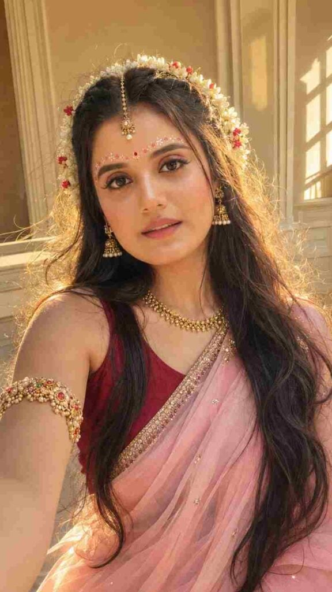
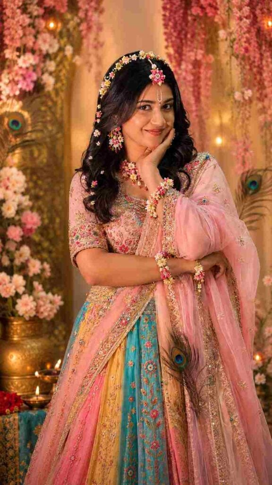
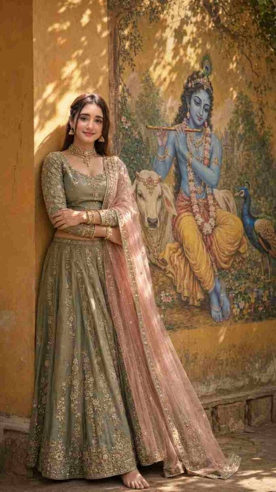
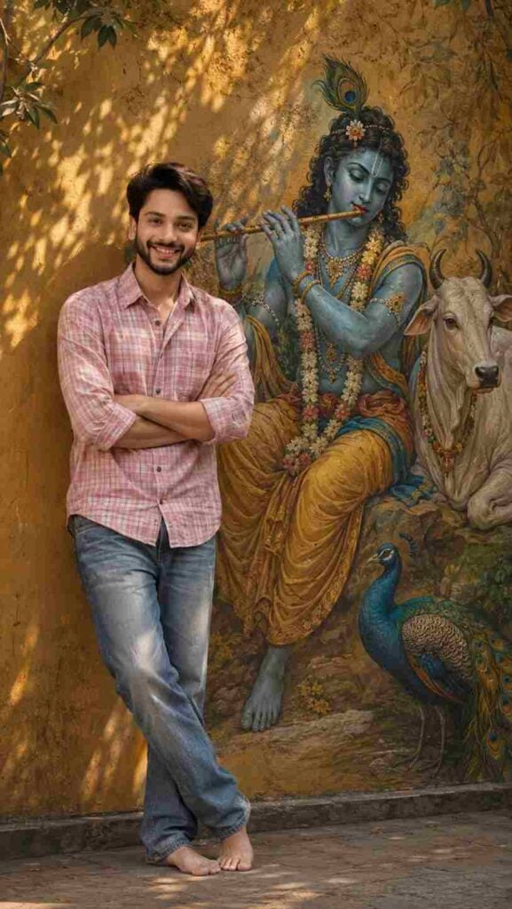

Radha Rani AI Photo Editing Prompts 2026 are a beautiful way to transform your regular photo into a traditional and devotional Radha-inspired portrait using AI photo editing. With a clear reference photo and a detailed prompt, you can create an elegant image with traditional clothing, jewellery, floral decorations, soft lighting, and a beautiful background. AI editing makes it easier to experiment with different creative styles without manually editing every element. In this article, you will find a detailed Radha Rani AI photo editing prompt along with simple steps and useful tips for creating your own image.
What Is Radha Rani AI Photo Editing?
Radha Rani AI photo editing is a creative way to transform an existing portrait into a Radha-inspired traditional look using an AI image editing tool. You can describe details such as clothing, jewellery, hairstyle, flowers, background, lighting, and overall composition through a text prompt. When your original photo is used as the reference, the AI can create a new artistic composition while keeping the person’s natural appearance as consistent as possible. This makes it useful for creating devotional-themed portraits, festive images, and traditional social media content.
Radha Rani Prompts for Janmashtami Photo Editing
Want more awesome prompts?
Join our community and get the latest viral prompts daily.
Create a highly realistic HD 9:16 vertical cinematic portrait using my uploaded photo as the exact face reference.
IMPORTANT:
Do not change, replace, beautify, or alter my identity. Keep my facial features, face shape, eyes, nose, lips, skin tone, eyebrows, and natural smile recognizable and consistent with the reference photo.
Transform me into a graceful Radha-inspired Janmashtami traditional look. Dress me in an elegant pastel pink/lavender traditional outfit with delicate golden embroidery and a lightweight matching dupatta covering the head naturally.
Add subtle traditional jewelry: elegant pearl-and-gold maang tikka, small earrings, layered pearl necklace, delicate bangles, and a small traditional nose ring. Keep the jewelry realistic and age-appropriate.
POSE:
Create a natural candid portrait with my head slightly tilted upward and my eyes looking softly toward the upper side, with a gentle happy smile.
Relaxed shoulders and graceful posture.
BACKGROUND:
Create a beautiful cinematic Janmashtami setting with warm festive lighting, marigold flowers, subtle peacock feathers, traditional décor, and a softly blurred Krishna devotional backdrop. Keep the background elegant and not overcrowded.
LIGHTING & STYLE:
Photorealistic DSLR photography, soft warm golden lighting, realistic skin texture, natural facial details, shallow depth of field, cinematic bokeh, realistic hair strands, high dynamic range, premium festive photography, ultra-detailed, natural colors.
COMPOSITION:
9:16 vertical Instagram portrait, subject clearly visible, realistic proportions, face in sharp focus, cinematic depth, professional photography.
Add elegant text in the upper-left:
"Happy Janmashtmi" with small festive symbols 💫♥️

? AI PROMPT
Use the uploaded photo as the ONLY facial identity reference and preserve the exact face, facial features, face shape, eyes, eyebrows, nose, lips, jawline, skin tone, natural proportions, and recognizable identity—no face reshaping, beautification, replacement, aging, or generic AI face. Create a unique ultra-realistic 9:16 vertical Indian Radha-inspired bridal selfie portrait, with a gentle head tilt, relaxed shoulders, and soft closed-mouth smile. Give her very long, thick, naturally wavy dark hair with realistic strands and subtle brown highlights, decorated with a semicircular crown of fresh white jasmine gajra with tiny red flowers. Add delicate pink-red-white floral/gopi dots across the forehead, tiny red bindi, delicate antique-gold maang tikka with pearl, elegant jhumkas, handcrafted gold necklace and detailed gemstone-studded bajuband. Dress her in a deep maroon blouse and pastel baby-pink sheer chiffon saree, with subtle champagne-gold embroidery and realistic flowing fabric. Keep makeup soft and natural with rosy blush, brown eye makeup, thin eyeliner, natural lashes and glossy mauve-pink lips while preserving visible skin texture and pores. Set the scene in a minimal cream-and-beige elegant indoor room, illuminated by soft late-afternoon sunlight from behind, creating a dreamy honey-golden rim light around the hair and gajra, natural jewelry reflections and gentle atmospheric glow. Premium smartphone photography, realistic skin, crisp eyes, detailed hair and flowers, natural depth of field, cinematic but authentic, feminine, graceful, luxurious, photorealistic HD/4K. Avoid yellow/orange skin, excessive golden grading, plastic skin, heavy makeup, oversized jewelry, fake flowers, distorted anatomy, extra fingers, blurry face, CGI, cartoon, oversaturation, or any change to facial identity. Aspect ratio: 9:16.

? AI PROMPT
Create a photorealistic Radha Rani-inspired traditional look using the uploaded image as the exact reference.
IMPORTANT - PRESERVE THE ORIGINAL PERSON:
Keep the face, facial features, identity, skin tone, expression, eyes, nose, lips, face shape and proportions exactly the same as the original photo.
Keep the exact same pose, body position, hand placement, head angle, camera angle, framing and composition.
Do not change the person's identity or facial structure.
Do not alter the original pose or crop/zoom the image.
Radha Rani Styling: Transform only the styling and outfit into a beautiful, elegant and colourful Radha Rani-inspired traditional look.
Add a vibrant traditional lehenga in soft pastel pink, magenta, yellow, turquoise and subtle golden tones.
Add delicate golden embroidery and elegant traditional detailing.
Use fresh floral accessories as the main jewellery theme: small flowers around the hair, floral earrings, delicate floral necklace, floral wrist accessories and subtle flower embellishments.
Add a graceful Radha-style floral hair decoration.
Add a minimal, elegant Radha Rani tilak on the forehead while keeping the original forehead and facial features unchanged.
Add a few delicate peacock feathers as subtle decorative elements, keeping the overall look graceful rather than heavy.
Keep the styling youthful, soft, divine and elegant - not overly dramatic.
Lighting & Background: Use soft cinematic lighting with a colourful dreamy atmosphere, subtle warm pink, golden, peach and blue tones, gentle glow and realistic shadows. Keep the background aesthetically pleasing and slightly dreamy while maintaining the original composition.
Realism: Ultra-realistic photography, natural skin texture, realistic hair strands, detailed fabric and embroidery, authentic flowers, realistic jewellery, high-resolution details, cinematic depth, premium portrait photography.
Strict instruction: Change only the outfit, accessories, makeup/tilak and styling. Preserve the original face, identity, expression, pose, body proportions, camera angle and composition exactly as they are

? AI PROMPT
Use the uploaded facial reference as the ONLY identity reference and preserve the woman’s exact face, facial structure, features, skin tone, proportions, texture, and recognizable identity with zero face reshaping, beautification, replacement, or identity drift. Use the uploaded dress reference as the ONLY clothing reference. Create an ultra-photorealistic cinematic 9:16 portrait of the same young Indian woman casually leaning beside a warm mustard-yellow wall featuring a large, beautifully painted Lord Krishna mural. She wears the exact sage/olive-green traditional lehenga-style outfit from the dress reference, with embroidered long-sleeved blouse, ornate detailing, soft blush-pink sheer dupatta with gold edging, refined jhumkas, choker, layered necklace, and gold bangles. She is barefoot with arms comfortably folded, relaxed and confident, with natural anatomy and realistic fabric folds. The mural shows serene blue-skinned Krishna with curly dark hair, peacock feather, traditional jewelry, floral garlands, flute, and seated peacefully, accompanied by a white cow and vibrant peacock, all clearly painted into the mural. Golden-hour sunlight filters through tree branches, casting soft organic leaf shadows across the wall and mural. Warm natural lighting, accurate skin tones, subtle cinematic contrast, realistic jewelry reflections, visible embroidery, skin pores, individual hair strands, detailed wall and mural texture, natural depth of field, DSLR photography, subtle film grain, premium cinematic color grading. Peaceful, devotional, feminine, traditional, spiritual, graceful atmosphere. Authentic photograph, not CGI.
Negative: different person, identity drift, face swap, altered face, beautified face, generic AI face, plastic skin, excessive smoothing, CGI, 3D render, cartoon, illustration, pink checkered shirt, jeans, western clothing, wrong outfit, wrong colors, missing dupatta, distorted embroidery, excessive jewelry, malformed hands, extra fingers, fused fingers, distorted anatomy, distorted Krishna, cow or peacock outside mural, artificial lighting, excessive glow, oversaturation, HDR, blurry face, low resolution, cropped subject, clutter, watermark, logo, text, captions, signature.

? AI PROMPT
Shot: Use the uploaded reference image as the only facial identity reference. Preserve the young Indian man’s exact face, facial structure, eyes, eyebrows, nose, lips, jawline, skin tone, natural texture, hairline, proportions, and recognizable identity with zero identity drift. Do not beautify, reshape, replace, stylize, or generate a different face.
Create a 9:16 ultra-photorealistic cinematic full-body portrait of him standing barefoot beside a large Lord Krishna wall mural. He wears a pink checkered shirt with sleeves casually rolled up and faded blue jeans, with his arms comfortably folded across his chest while casually leaning against the warm mustard-yellow wall. Natural confident posture, realistic hands, fingers, body proportions, clothing folds, denim texture, and bare feet.
The mural features serene blue-skinned Krishna with curly dark hair, peacock feather, traditional jewelry, floral garlands, Indian attire, and flute, seated peacefully, accompanied by a white cow and vibrant peacock, all clearly painted as part of the wall mural with authentic brush texture.
Warm golden-hour sunlight filters through tree branches, casting soft organic leaf-and-branch shadows across the wall and mural. Natural skin tones, realistic highlights, subtle shadows, detailed hair strands, visible skin pores, fabric texture, mural brushwork, textured wall, realistic depth of field, professional DSLR photography, natural perspective, subtle film grain, premium cinematic color grading.
The man remains the primary photographic subject, while the Krishna mural is large, detailed, and clearly visible beside him. Peaceful, devotional, spiritual, artistic, culturally elegant, warm cinematic atmosphere. Authentic photograph, not CGI or digital art.
Negative: different person, identity drift, face swap, altered face, beautified face, generic AI face, face reshaping, plastic skin, excessive smoothing, CGI, 3D, cartoon, distorted anatomy, malformed hands, extra fingers, distorted feet, artificial mural, real Krishna, real animals, excessive glow, oversaturation, harsh lighting, excessive HDR, blur, low resolution, cropped body, cropped feet, watermark, logo, text, signature.
Creating a Radha Rani-inspired AI photo is simple when you have a clear reference image and a detailed prompt. First, select a high-quality portrait where your face is clearly visible. Upload the image to your preferred AI photo editing tool and add the prompt provided above. Generate the image and carefully review the result. If some details do not look the way you want, make small changes to the prompt and generate another version. You can adjust the outfit, flowers, jewellery, background, lighting, or pose while keeping the facial identity instructions consistent.
Choose a Clear Reference Photo
A clear reference photo can help the AI understand your facial appearance more accurately. Try to use a high-resolution image with your face clearly visible and good lighting. Avoid extremely blurry photos, heavy filters, or images where the face is covered by objects. A simple front-facing or slightly angled portrait can work well for this type of editing. If possible, choose a photo with natural skin tones and minimal visual distractions. Before generating the final image, make sure the reference photo represents the appearance you want to maintain in the edited portrait.
Create a Traditional Radha-Inspired Look
To achieve an elegant traditional appearance, you can describe clothing and accessories clearly in the prompt. Elements such as a colourful lehenga, golden embroidery, traditional jewellery, maang tikka, jhumkas, bangles, floral decorations, and jasmine flowers can help create the desired visual style. You can also experiment with different colour combinations such as pink, red, white, yellow, or pastel shades. Keep the overall design balanced and natural instead of adding too many decorative elements. A simple traditional composition can make the final portrait look more elegant and visually pleasing.
Tips for Better Radha Rani AI Photos
For a more natural result, start with a clear reference photo and use specific instructions in your prompt. Mention the facial identity, clothing, hairstyle, jewellery, lighting, background, and photography style you want. Avoid changing too many elements at once if the first result is not satisfactory. Check the generated image carefully for facial details, hands, jewellery, clothing, and overall proportions. If something looks unusual, adjust that specific part of the prompt and generate another version. Trying small changes can help you achieve a more balanced and realistic traditional portrait.
Final Words
Radha Rani AI Photo Editing Prompts 2026 can help you create a beautiful traditional portrait using your own photo and a detailed AI prompt. By choosing a clear reference image and describing the outfit, jewellery, flowers, background, lighting, and photography style, you can experiment with different Radha-inspired looks. Start with the prompt provided in this article, review the generated result, and make small adjustments whenever needed. I hope this guide helps you create your desired Radha Rani AI photo. If you face any problems while using the prompt, feel free to let me know in the comment box.